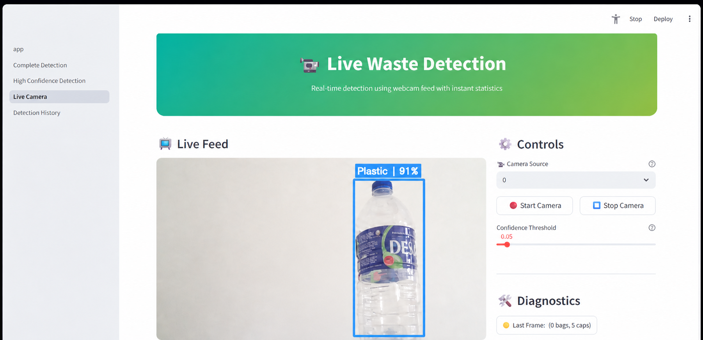

My Contribution
- Supported the system interface and presentation flow
- Helped organize project content and documentation
- Assisted in testing the waste classification system
- Prepared project explanation and showcase materials
Project Details
Group project developed using YOLOv11 and Streamlit for smart waste sorting.

This project presents a waste classification system developed as a group project. The system uses YOLOv11 object detection and computer vision to identify waste items such as plastic bottles, paper, glass, metal, and organic waste. The results are displayed with bounding boxes and confidence scores through a Streamlit web interface. The project aims to support better waste sorting, recycling efficiency, and automated waste management.
System Screenshots
A collection of key screens from the Waste Classification System using image recognition.
